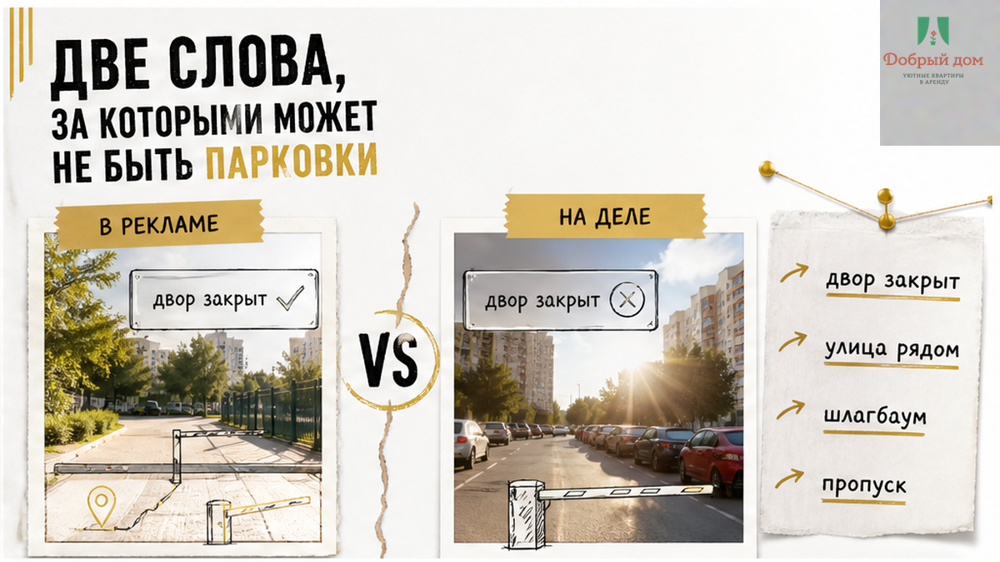
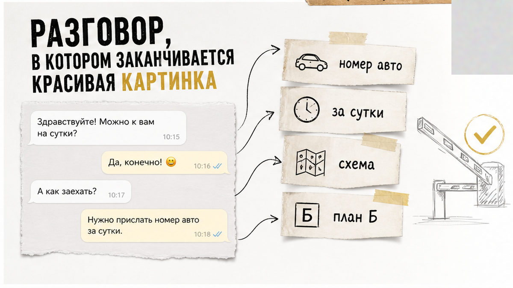
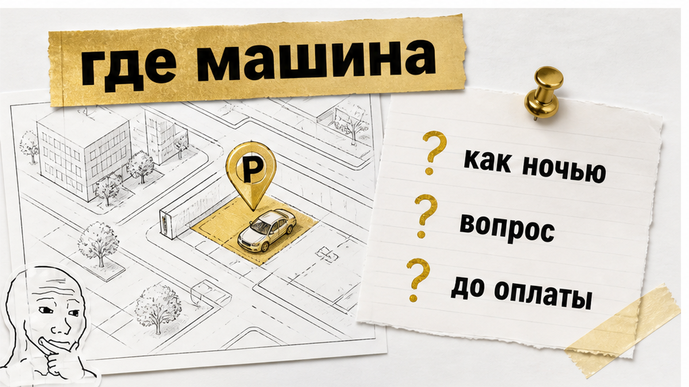
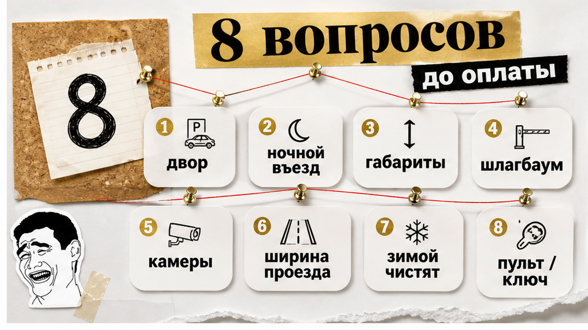
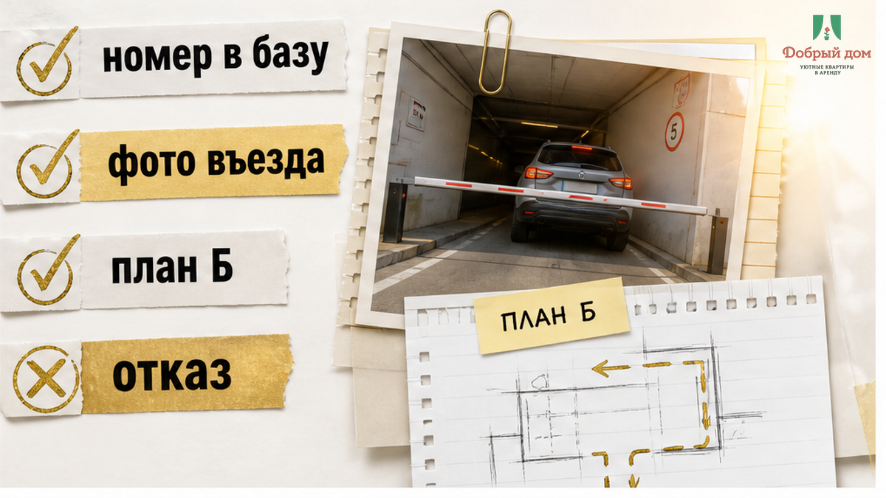

22:40, конец августа 2026-го. Жара ещё держится, но уже темнеет рано. Машина стоит перед шлагбаумом, сзади поджимает такси, на заднем сиденье двое детей и спящая бабушка, в багажнике четыре сумки и коляска. Квартиру забронировали за неделю, в объявлении было написано: «парковка рядом». По номеру из чата ответили через семь минут: «Двор закрытый, пропуск только для собственников, поставьте где-нибудь на улице». Где-нибудь — это вдоль дороги, где через сорок метров знак, или на пятачке у мусорных контейнеров, куда утром приедет мусоровоз.
Двадцать минут у шлагбаума. Три перестановки машины. Четыре захода с вещами. Заселение в час ночи вместо десяти вечера. Квартира при этом нормальная: чистая, тёплая, без сюрпризов. Утром гость оставил одну звезду. Отзыв был не про квартиру. На третий день на лобовом стекле появилась записка от жильца дома: «Это моё место, съезжай». Не штраф и не эвакуатор. Просто бумажка. Но после неё человек с семьёй в чужом городе уже не отдыхал — он караулил машину. Четыре ночи платил за квартиру и четыре ночи тревожился за автомобиль.
Я хост посуточной в Тюмени. Это «Добрый дом», comfort+. Пишу об этом потому, что «парковка рядом» выглядит безобидно, а для гостя иногда стоит трёх часов вечера и всего настроения поездки. Связь со мной — Telegram и MAX.

«Парковка рядом» — не обещание. Чаще это наблюдение: автор объявления однажды вышел из подъезда, увидел стоящие машины и описал вид из окна. Он мог не врать. Он просто не уточнил главное.
За этой фразой может скрываться закрытый двор со шлагбаумом, куда пускают только по номеру автомобиля из базы управляющей компании. Вашего номера там нет. Может быть открытый двор, где мест в три раза меньше, чем машин, и после девяти вечера свободного уже не бывает. Может быть платная парковка в двухстах метрах, о которой в объявлении не сказано ни слова. Может быть карман у дороги, куда утром приедет уборочная техника. А может быть действительно свободный двор — так тоже бывает. Только это нужно подтвердить до брони.
В объявлении все варианты выглядят одинаково: «парковка рядом». В жизни разница между ними — три часа с детьми у шлагбаума, четыре захода с багажом и отзыв, который навсегда останется отзывом не про квартиру.

Мне пишут:
— Здравствуйте, у вас парковка есть?
— Двор со шлагбаумом. Есть гостевой въезд, номер машины вношу заранее, за сутки. Диктуйте номер.
— А если я номер не помню? Я на работе.
— Тогда позже. Без номера въезд не открою — не потому что вредный, а потому что шлагбаум не открывается по доброму слову.
Вот здесь и ломается иллюзия о хосте, который может всё: договориться, позвонить, «решить на месте». У шлагбаума хоста нет. Есть база номеров и охранник, который в 23:00 не будет разбираться, кто вы и на какой срок приехали. Можно быть максимально внимательным, прислать схему, предупредить заранее. Но железная труба на въезде всё равно работает по своим правилам.
Гостеприимство заканчивается там, где начинается закрытый въезд. Дальше работает не импровизация, а заранее внесённый номер машины. Всё остальное — надежда, что ночью как-нибудь получится.
Мне пишут: «Вы сдаёте квартиру — вы и обеспечьте парковку, я плачу деньги». Возражение справедливое ровно наполовину.
Хост обязан честно сказать, что есть и чего нет, дать схему въезда и заранее внести номер автомобиля. Хост не может выдать гостю место во дворе, которое принадлежит жильцам дома. Не может отменить знак на улице. Не может сделать свободным двор, где после девяти вечера уже стоят машины.
А как вы сами проводите эту границу? Если считаете, что хост может обеспечить любое место в любое время, напишите мне лично в Telegram или MAX. Спор по делу, без обид.
Вывод из этой истории один: сначала схема въезда — потом деньги.
Не «сначала бронь, с парковкой на месте разберёмся». Не «приедете — созвонимся». Пока оплата не ушла, вы клиент с правом отказаться. После оплаты вы уже не выбираете квартиру — вы спасаете вечер. Стоите с чемоданами перед шлагбаумом и пытаетесь понять, куда поставить машину так, чтобы утром не увидеть записку на стекле.
Те же данные должны быть у вас до заезда, а не после него. Как при бесконтактном заселении, когда код приходят заранее — с парковкой так же: номер автомобиля, путь во двор и план Б до оплаты.

Задайте его до перевода денег, дословно:
«Где именно стоит машина и как я въезжаю ночью?»
После этого слушайте не обещание, а конкретику. Хост, у которого с парковкой порядок, ответит быстро: двор закрытый или открытый, нужен ли номер автомобиля, кто открывает шлагбаум в полночь, сколько мест и что делать, если всё занято.
Хост, у которого порядка нет, начнёт говорить: «обычно», «как правило», «место всегда найдётся», «не переживайте». Слово «обычно» не открывает шлагбаум. И не объясняет, куда ставить машину в 23:00.

Инструмент здесь. Скопируйте вопросы и отправьте их любому хосту в любом городе:
Про доплаты после брони — отдельный материал: скрытые доплаты при посуточной аренде от хозяина.
Сверить свой случай, даже если бронируете не у меня, можно через Telegram. Скажу честно, что означает формулировка из объявления.

В «Добром доме» парковка — часть заселения, а не приятный бонус, который вспоминают после приезда.
Гость, которому честно сказали «нет», обычно спокойнее гостя, которому пообещали место и не дали его. Это скучная часть сервиса. Поэтому она и работает.
За полтора года у нас не было ни одного отзыва про шлагбаум. По конкретным датам и адресу можно уточнить у менеджера: Telegram или MAX.
Поздно, семья устала, за спиной сигналит такси. Сначала верните себе несколько спокойных минут.
Если в этот момент хост начинает говорить о доплате за помощь с парковкой — это уже другой разговор. Про залог на выезде — история про залог.
Квартиру гость оценивает по фотографиям и за десять минут после входа. Парковку — по тому, что происходило до входа: где он стоял, кто отвечал, открывался ли шлагбаум, пришлось ли носить вещи четыре раза, не осталось ли на стекле чужой записки.
Чистая и тёплая квартира может получить одну звезду, если человек запомнил не её, а двадцать минут перед закрытым въездом с детьми в машине. Поэтому вопрос о парковке задают не тогда, когда уже приехали. Его задают до оплаты.
Это бесплатно.
Тюмень, посуточно, comfort+. Бронирование — добрыйдом-72.рф/booking и сайт. Вопросы — Telegram и MAX. Менеджер — @Dobriy_dom_Tyumen. Телефон: +7 993 574-83-22.